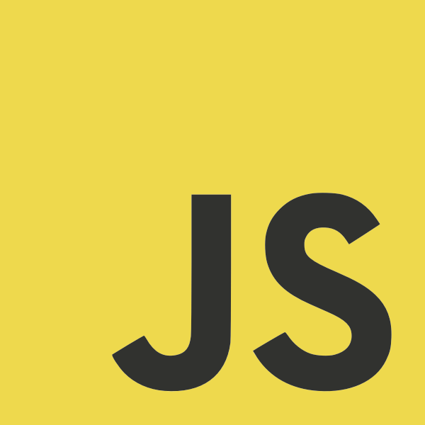

There are innate differences when trying to learn computer science versus other standard subjects. One notable difference is that learning computer science is more effective with a hands-on approach rather than a standard visual and auditory learning approach. This is where the pedagogy for this class, interestingly named “Athletic Software Engineering” comes into play. The “Athletic Software Engineering” is a distinct method of teaching that requires the student to take initiative and be more proactive in learning course material, which is something that I’ve struggled with in the past since I had a terrible sense of time management. Honestly, this style of teaching would be incredibly useful in the prerequisites for this course, at least for the 200-level courses. So far, I don’t think I am spending enough time learning the material, but I have been practicing on the WOD’s since it’s really the only practice problems we have. There also seems to be some long-term benefits with this pedagogy, since it can help students land careers, internships, or even learn new hobbies.
After nearly one week of learning Javascript, I’ve come to realize that it is significantly different from other programming languages that I’ve learned before, such as Java and C/C++. There are standard features in Javascript that remain the same throughout most programming languages, but the differences lie in the unique properties and syntax. One of the biggest changes is in the fundamental property of assigning and storing variables. In Javascript, a declared variable is able to store any data type (i.e. an integer or a string). Unlike in Java or C/C++, a declared variable needs to specify the type of data it can hold, and is only able to store that specific data type. This is only one example, but Javascript seems to have many more surprises waiting in store.
Unlike the stricter programming languages that I’ve learned, such as Java and C/C++, Javascript is a more flexible programming language due to its unique set of features and properties. Because of its flexibility, Javascript appears to be more convenient and useful to programmers. It is possibly because there is an emphasis on functionality, such as the example of assigning and storing variables above. This allows programmers to solve much more complex problems with more ease. Ultimately, Javascript helps to simplify and expand the countless amount of problems software engineers are eventually faced with.